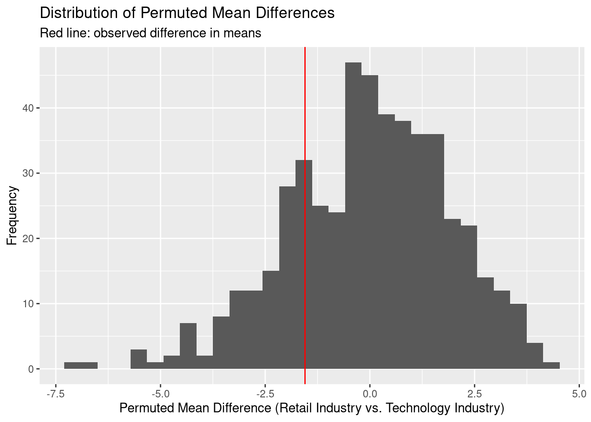

Simulation study using company reputation scores from popular companies in the retail and technology industries.
Author
Anjali Suva
Published
October 29, 2025
For this simulation study, I plan on taking observations found from the 2022 Axios-Harris Poll, which tracked the reputation of the most visible brands in the United States. The data set includes 100 of the most visible companies along with the industry that they operate in, their reputation score (a higher score corresponds to a better reputation) and their rank in the list.
The poll surveyed 33,096 Americans in a nationally representative sample, asking for “nominations” for which companies were the most well-known. Poll respondents were asked which two companies have the best reputation and which two have the worst reputation. These nominations were aggregated into a single list, counting all associated brands and subsidiaries with their respective parent companies. From this master list, the 100 most nominated companies were placed on the “Most Visible” list.
The “ratings” phase of the survey involved online interviews where individuals were asked to rate two companies from the “Most Visible” list with which they indicated being very or somewhat familiar.
Through my preliminary observation of the data set, I noticed that the company with the best reputation in the data set was Trader Joe’s, a retail store. On the other end, a few companies with low scores included Facebook and Twitter, both part of the technology industry. Since there seemed to be more retail and technology companies in the data set compared to other sectors of the industry, I wanted to see if there was a significant difference in average reputation score between the two sectors.
To begin the permutation test, I started by importing the data set from TidyTuesday:
# A tibble: 500 × 8
company industry `2022_rank` `2022_rq` change year rank rq
<chr> <chr> <dbl> <dbl> <dbl> <dbl> <dbl> <dbl>
1 Trader Joe's Retail 1 82.4 NA 2017 NA NA
2 Trader Joe's Retail 1 82.4 NA 2018 NA NA
3 Trader Joe's Retail 1 82.4 NA 2019 NA 78.2
4 Trader Joe's Retail 1 82.4 NA 2020 NA 80.7
5 Trader Joe's Retail 1 82.4 NA 2021 NA NA
6 HEB Grocery Retail 2 82 NA 2017 NA NA
7 HEB Grocery Retail 2 82 NA 2018 NA 81.1
8 HEB Grocery Retail 2 82 NA 2019 NA 82.5
9 HEB Grocery Retail 2 82 NA 2020 NA 83.1
10 HEB Grocery Retail 2 82 NA 2021 NA NA
# ℹ 490 more rows
In the tibble above, the variable “2022_rq” refers to each company’s reputation score and the variable
“2022_rank” assigns each company a rank based on their position in the list—as determined by reputation score in descending order.
Because not all the columns in this data set are particularly useful for the simulation study I hope to conduct, I will initially attempt to clean it. I want to remove the rows for companies that aren’t in the retail or technology sectors and only look at data for 2022, which are the most recent entries.
# A tibble: 37 × 4
company industry `2022_rank` `2022_rq`
<chr> <chr> <dbl> <dbl>
1 Trader Joe's Retail 1 82.4
2 HEB Grocery Retail 2 82
3 Patagonia Retail 3 81.8
4 Samsung Tech 6 80.5
5 Sony Tech 10 79.6
6 IBM Tech 11 79.5
7 Microsoft Tech 15 79
8 The Home Depot Retail 16 78.9
9 Apple Tech 21 78.6
10 Netflix Tech 22 78.5
# ℹ 27 more rows
Now that the data set has been cleaned, I plan on identifying the average reputation scores for both the retail and tech industries.
My Research Question: Within the United States, do popular companies in the retail industry have higher reputation scores with the American public than popular tech companies?
My null hypothesis is that there is no difference in average reputation scores between the retail and tech industries.
My alternative hypothesis is that the average reputation score in the retail industry is greater than in the tech industry.
Part of my justification for my alternative hypothesis is based on the idea that the American public is likely to be more familiar with retail brands since they are more customer-facing (dealing in direct transactions with individual buyers). Tech companies like Facebook, on the other hand, have suffered from high profile lawsuits involving data privacy and may be negatively viewed due to public distrust or unfamiliarity with technology.
To begin testing my hypothesis, I want to first calculate the average reputation score between popular companies in the retail industry and the average reputation score between population companies in the technology industry. The results from the data set are below:
company_poll_2022 |>filter(industry =="Retail"| industry =="Tech") |>group_by(industry) |>summarize(avg_score =mean(`2022_rq`))
# A tibble: 2 × 2
industry avg_score
<chr> <dbl>
1 Retail 75.2
2 Tech 73.7
By merely looking at the observed values for means of the two industries, I can confirm that the average scores match my alternative hypothesis—the average score of the retail industry is higher than the score for the technology industry.
With these observed means, I plan on using a function to randomly reassign data points to the two different groups (retail vs. technology). Under the null hypothesis, this random reassignment should produce test statistics similar to the observed one. Using the function below, the observations in the data set are repeatedly shuffled to create multiple “null” data sets and their averages are taken. Multiple iterations of this will generate a distribution of mean differences under the null hypothesis, which can be compared to the observed difference.
Now that I have a permutation function, I will run it 500 times using the map function below. This will generate 500 simulated null data sets that can be used to show the distribution of permuted mean differences on a histogram, which is included below. In the histogram, the observed average differences in the original data set is shown with a red line.
set.seed(50) perm_stats <-map(c(1:500), perm_data, data = company_poll_2022) |>list_rbind()perm_stats |>ggplot(aes(x = perm_avg_diff)) +geom_histogram() +geom_vline(aes(xintercept = obs_avg_diff), color ="red") +labs(title ="Distribution of Permuted Mean Differences",subtitle ="Red line: observed difference in means",x ="Permuted Mean Difference (Retail Industry vs. Technology Industry)",y ="Frequency" )

Since the line is so close to the center of the distribution, it is highly likely that there is no real difference between the observed values and the expected difference under the null hypothesis. What is interesting to note is that although I initially expected Retail companies to have higher reputation scores, the observed mean difference was slightly negative in this distribution, indicating that Technology companies had marginally higher average reputation scores. However, this difference is small and likely due to random variation.
To verify that there is likely no difference between the reputation scores of the two industries, I will compute the p-value below. The code below checks whether the permuted mean difference is greater than the observed one for each permutation and takes the average of all the times where the permuted mean difference was greater than the observed one.
Since the p-value is 0.774, this means that about 74.4% of the permuted differences under the null hypothesis were greater than or equal to my observed mean difference. This is a very high p-value, so with this data, I would fail to reject the null-hypothesis.
To recap, the steps of this study included 1) identifying the observed means between the two industries, 2) forming a null and alternative hypothesis based on observed data, 3) shuffling data to create a distribution of permuted mean differences between the two industries, 4) calculating the p-value for the proportion of permuted differences that are greater than or equal to the observed mean difference, and 5) interpreting the p-value in the context of the problem. The results of this process suggest that there is not enough evidence to conclude that the two industries differ in their reputation scores.
Something that is important to note is that after cleaning the data set, the number of observations were reduced very significantly to 37 observations. The limited sample size may have led to a larger p-value.